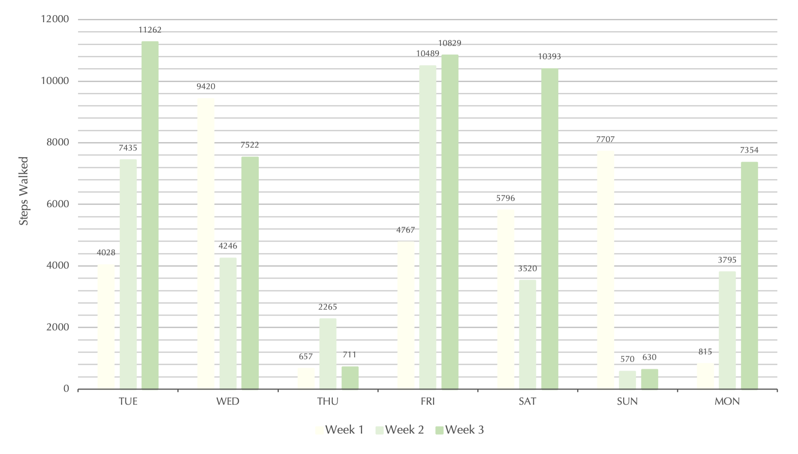

<!DOCTYPE html>
<html>
    <head>
    <title>Entry 6</title>
    <link rel="stylesheet" href="style.css">
    <link rel="stylesheet" href="../style/reset.css">
    <link rel="preconnect" href="https://fonts.googleapis.com">
    <link rel="preconnect" href="https://fonts.gstatic.com" crossorigin>
    <link href="https://fonts.googleapis.com/css2?family=Autour+One&family=Quattrocento&family=Red+Hat+Text&display=swap" rel="stylesheet">
    <link rel="preconnect" href="https://fonts.googleapis.com">
    <link rel="preconnect" href="https://fonts.gstatic.com" crossorigin>
    <link href="https://fonts.googleapis.com/css2?family=Autour+One&family=Quattrocento&family=Red+Hat+Text&display=swap" rel="stylesheet">
    </head>
</html>

<header>
    <h1>Entry 6: Walking as a Transportation</h1>
    <ul>
        <li><a href="https://yyyzzx.github.io/harmonic-collection/homepage/">Homepage</a></li>
        <li><a href="#">Entries</a></li>
        <li><a href="#">About</a></li>
    </ul>
</header>

<body>
    <section class="intro">
        <h2>Introduction</h2>
        <br>
        <p>Whenever the days get busy, especially during the school days, I feel that I am not getting enough exercise; The main and only daily exercise I get is walking when commuting. Due to the difficulty in forcing myself to do sporting events or go to the gym, increasing the number of steps I walk each day may be a possible way to get more exercise. According to <a href="https://www.medicalnewstoday.com/articles/how-many-steps-should-you-take-a-day#for-general-health">Medical News Today</a>, it is recommended to aim for 10,000 steps a day, which is approximately 8 km.</p>
        <br>
        <p>During this week, I will try to develop the habit of walking as a main method of commute; instead of taking the bus, I will walk to school and walk back home.</p>
    </section>

    <section class="stats">
        <h2>Statistics Collected</h2>
        <br>
        <p>To demonstrate the changes to the steps walked per day, the data from two weeks before developing the habit, from the 10th to the 23rd of October, would also be analyzed.</p>
        <br>
        <p>The table below shows the daily target completion of the three weeks:</p>
        <p>The figures in highlighted cells are those that have exceeded the goal of 10,000 steps.</p>
        <br>
        <div class="completion"><table>
            <tr>
                <th>Week 1</th>
                <th>4028</th>
                <th>9420</th>
                <th>657</th>
                <th>4767</th>
                <th>5796</th>
                <th>7707</th>
                <th>815</th>
            </tr>
            <tr>
                <th>Week 2</th>
                <th>7435</th>
                <th>4246</th>
                <th>2265</th>
                <th><div class="color">10489</div></th>
                <th>3520</th>
                <th>570</th>
                <th>3795</th>
            </tr>
            <tr>
                <th>Week 3</th>
                <th><div class="color">11262</div></th>
                <th>7522</th>
                <th>711</th>
                <th><div class="color">10829</div></th>
                <th><div class="color">10393</div></th>
                <th>630</th>
                <th>7354</th>
            </tr>
        </table></div>
        <br>
        <p>To better look at the figures for each of the weekdays, the bar chart below was made:</p>
        <div class="img-container"></div>
        <p>The habit of walking only applies to days when I go out, on Thursdays, the only weekday that I don’t have any classes, I stayed at home for the whole day, so the figure for all three weeks’ Thursday doesn’t have much difference. Same for the weekends, the number of steps that I walked highly depended on whether I went out or stayed at home.</p>
        <br>
        <p>Factors that may affect steps walked per day:</p>
        <ul>
            <li> Weather</li>
            <li> Time of day</li>
            <li> Purpose of going out</li>
            <li> Shoes I was wearing</li>
            <li> Entertainment devices(?) e.g. did I bring my headphone</li>
        </ul>
    </section>

    <section class="reflection">
        <h2>Reflection</h2>
        <br>
        <p>During this week, I have walked 48,701 steps in total, which is roughly 16,000 more steps than the two previous weeks. On average, I walked 6957 steps per day, which is still far away from the goal of 10,000 steps a day, but I am quite satisfied with the improvement made.</p>
        <br>
        <p>At the start of the week, it was difficult to force myself to walk to school, especially when the weather wasn’t good. I have to leave home a bit earlier and wake up from bed earlier when I have morning lessons. Overall, I think this a habit that I could maintain, at least till the weather becomes too cold.</p>
    </section>

    <section class="button">
        <table>
            <tr>
                <th> </th>
                <th><a href="https://yyyzzx.github.io/harmonic-collection/entry-5/">&#9754; Previous Entry</a></th>
                <th> </th>
                <th><a href="#">Next Entry &#9755;</a></th>
                <th> </th>
            </tr>
        </table>
    </section>
</body>